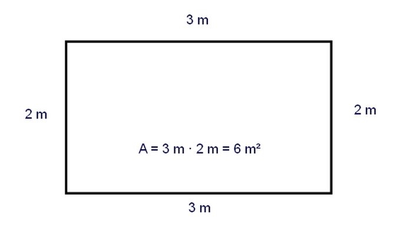

Vi betecknar omkretsen med en liten bokstav p och ytan med en stor bokstav A. Med andra ord är symbolen för omkrets p och symbolen för area är A.
p = omkrets
A = area
Omkrets är den sammanlagda längden av de linjer eller kurvor som avgränsar en figur. Area är ett mått på hur stor yta en figur täcker.
Se också sidan https://www.matteboken.se/lektioner/matte-1/geometri/omkrets-och-area#!/
Översättningarna är inte färdiga...
Explanation: perimeter
The perimeter means the length of the boundary. For a rectangle the perimeter is calculated by adding the sides together.
perimeter = the sum of all the sides
For example if the base of the rectangle is three metres and the height of the rectangle is two metres then the rectangle has two sides of length 2 m and two sides of length 3 m and the sum becomes ten metres.
Linguistical notes: perimeter and circumference are synonyms in English. They are the lengths of the boundaries of a shape (the length of the contiguous and enclosing line). The length of a straight-sided shape (such as a triangle, square, hexagon etc.) is called the perimeter. The length of a round shape (such as a circle) is called the circumference. In Finnish, we can use one single word for either quantity: "piiri". However, there is also another word "ympärysmitta" available for the circumference. (another note for later use: in Finnish the lowercase p means "piiri", for both perimeter and circumference, whereas in English often the uppercase C is used for the circumference)
Explanation: area
The area means the size of the shape, or how much space can be fitted inside the boundary. The area is always subject to the shape. The area of a rectangle is the product of its base and height. In other words, the area is calculated by multiplying the base and the height.
rectangle area = base times height
For example if the base of the rectangle is three metres and the height of the rectangle is two metres then the area is three metres multiplied by two metres: six square metres.

Excercise: perimeter and area:
Draw two rectangles in your notebook (squared paper): one has a base of four little squares and a height of two little squares. The other rectangle is a square itself with a side of three little squares. Calculate the perimeters and the areas of both big rectangles. You will find out that the perimeters are the same but the areas are not the same.